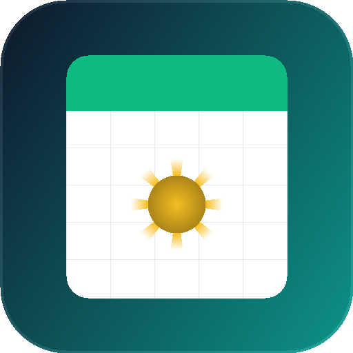

موتور جامع بومیسازی تقویم خورشیدی در اودو ۲۰ با تبدیل سراسری بدون دستکاری XML، گروهبندی پیوت بر اساس ماههای شمسی، چاپ فاکتورهای رسمی و فرمولهای اکسل.
تبدیل خودکار تاریخها در تمام نماهای لیست، فرم، کانبان، تقویم، گانت و فعالیتها بدون نیاز به ویرایش فایل ویو.
توابع محاسباتی شمسی شامل JDATE، JEDATE، JEOMONTH، JYEAR، JMONTH، JDAY در محیط Odoo Spreadsheet.
تعریف روزهای پایان هفته (فقط جمعه یا پنجشنبه و جمعه) و تقویم اختصاصی روزهای کاری برای هر شرکت به تفکیک.